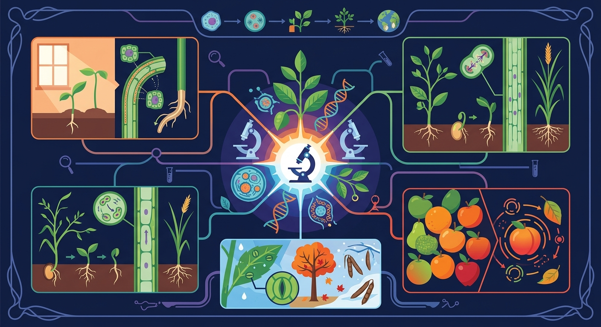
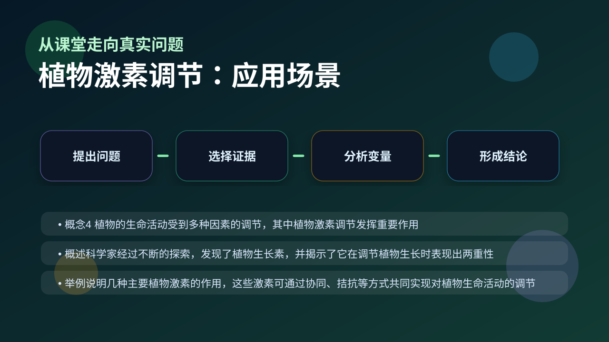

Gallery v1.0.0 · skill v7.14
机体怎样通过反馈调节维持内环境稳定？

已经知道：初中已学过植物通过根茎叶等器官进行物质运输和形态建成，并初步接触过生长素促进细胞伸长的概念，知道植物具有向光性等应激特性。
但问题是：难以理解为什么同一激素在不同浓度下会同时出现促进和抑制效应（如顶端优势），以及不同激素（如生长素与乙烯）如何协同调控果实成熟这类复杂生理过程。
所以学：当需要为农作物设计保花保果方案时，必须准确掌握激素配比：如用2,4-D防止落果，同时控制乙烯利浓度以避免过早成熟导致运输损耗。
先选一个卡点。后面的例子、互动和 AI 学伴都会围绕它给你最小提示。
选择或输入后，本课会围绕你的问题展开。
农民摘除棉花顶芽的主要目的是？
现象入口：植物向光弯曲、生根、落叶、果实成熟等现象都与植物激素调节有关。
机制解释：植物激素是微量高效的信息分子，不同激素相互作用，生长素常表现浓度和器官差异的两重性。
证据抓手：证据来自胚芽鞘向光实验、不同浓度生长素处理、扦插生根和果实催熟实验。
变量线索：激素种类、浓度、作用部位、器官类型和环境刺激。做题时先找变量，再判断机制，最后写证据。
观察胚芽鞘向光弯曲实验中，背光侧比向光侧多生长1.2mm
单侧光使尖端生长素分布为背光侧65ng/g、向光侧35ng/g
10^-8mol/L生长素促茎伸长，10^-4mol/L时抑制生长38%
果树修剪后侧芽萌发因解除顶端优势，生长素降至临界值
情境：同一浓度生长素可能促进茎生长却抑制根生长。
作答路径：现象：茎在10^-6mol/L生长素下伸长而根受抑制→机制：根对生长素更敏感，低浓度即达抑制阈值→证据：根伸长区细胞在相同浓度下分裂速度显著低于茎
评分提醒：典型失分：混淆激素运输方向（如认为乙烯可长距离运输），或未指明具体浓度范围即断言促进/抑制
旋转 3D 分子模型，观察结构层级。请把结构特点和 植物激素调节 中的功能解释对应起来：结构不是装饰，而是功能的证据。
💡 操作提示：拖拽旋转模型，思考“形状、空间位置、结合位点”如何影响生命活动。
同一生长素，低浓度促进生长、高浓度抑制生长——顶芽优先生长而侧芽受抑，就是这个原理。
💡 探究任务：拖动最适浓度，比较茎（最适约10⁻⁴）与根（最适约10⁻¹⁰）的敏感度差异，解释顶端优势和除草剂原理。
把植物激素当成营养物质，或认为一种激素只产生一种效果。
只说“增加/减少”不够，要写清改变的是 激素种类、浓度、作用部位、器官类型和环境刺激 中的哪一个。
没有实验现象、曲线趋势或结构证据，答案就像猜测。
下列哪项能体现生长素两重性？
视频用语音和动态画面回顾本课主线：问题情境 → 机制模型 → 证据判断 → 迁移应用。

解释顶端优势、扦插生根、果实催熟和除草剂作用，都要分析浓度和部位。
提交后会检查你的解释是否包含现象、机制和变量。
如果学生只说出概念名称，继续追问：题干里哪个证据最关键？这个证据对应分子、细胞、个体还是生态系统层级？如果改变 激素种类、浓度、作用部位、器官类型和环境刺激 中的一个条件，结果会怎样？这三问能把答案从背诵推进到科学解释。
列举五种植物激素中至少三种的主要功能
分析棉花摘心操作中生长素浓度变化与侧芽萌发的关系
设计实验验证赤霉素与脱落酸对种子萌发的拮抗作用
某农民为促进侧枝生长对果树进行修剪，此措施利用的生长素特性是
学习小结：植物激素通过浓度梯度与器官敏感性协同调控生长，如生长素在茎中促生长而在根中抑生长，体现两重性调节机制
先独立作答，再点选项查看对错与错因。
下列哪种植物激素主要促进细胞伸长？
哪种植物激素可以打破种子休眠？
下列哪种植物激素与果实成熟有关？
植物激素中，____主要促进细胞分裂。
答案：细胞分裂素
细胞分裂素主要促进细胞分裂，影响植物生长和发育。
____可以促进叶片和果实脱落。
答案：脱落酸
脱落酸主要促进叶片和果实脱落，调节植物的生长发育。
下列哪项不是生长素的作用？
设计实验探究不同植物激素对番茄苗生长的影响。
❓ 为什么植物激素能控制植物生长方向？
❓ 为啥有的激素促进生长，有的反而抑制？
❓ 农民伯伯打药和植物激素有啥关系？
学完这一课，这些问题你都能自信地回答。
✅ 实际是横向运输导致分布不均
💡 混淆物理破坏与生物调控机制
✅ 乙烯催熟果实，脱落酸促进休眠
💡 两者都含'抑制生长'相关描述
口诀：生赤细胞脱乙，促抑生长记心里（生长素/赤霉素/细胞分裂素/脱落酸/乙烯）
类比：激素像快递员，带着特定指令在植物体内穿梭派送